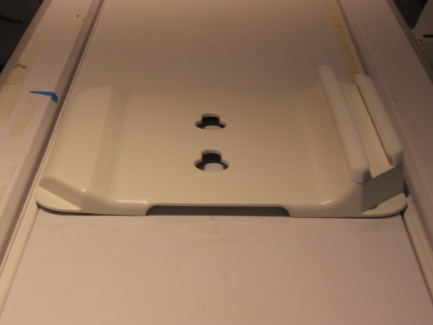
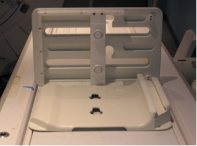
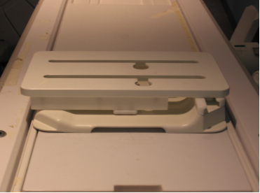
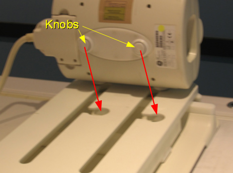
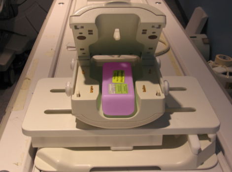
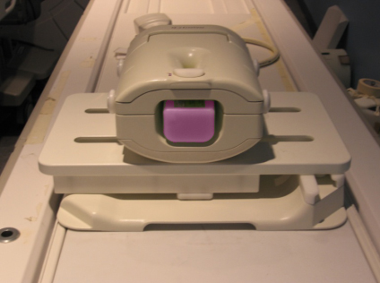
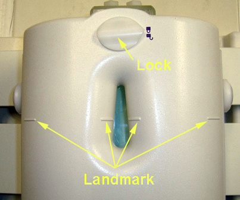

Operating Documentation
Direction 5670006, Rev# 1
Discovery MR750w GEM Service Methods
Module Version 2.0, Version Date 9/27/11
Operating Documentation |
| Required Persons | Preliminary Reqs | Procedure | Finalization |
|---|---|---|---|
| 1 | Not Applicable | 15 mins | Not Applicable |
Follow this process to prepare for the MCQA test using the 3.0T HD 8-Channel Wrist Array by Invivo, Catalog Number M7000GW.
| NOTE: | Coils do not ship with phantoms. Phantoms come in a unified phantom set with the MR system. |
| Item | Qty | Effectivity | Part# | Manufacturer | |
|---|---|---|---|---|---|
| Cubicle Unified Phantom | 1 | Unified Phantom Set | 5342681 | - | |
| 3.0T 8-Channel Wrist Coil Baseplate with Baseplate Riser | 1 | - | 5406395-12 | - | |
| Condition | Reference | Effectivity |
|---|---|---|
For Discovery MR750, the following coil configuration names must be installed to run this tool: GE_HDx Wrist. | - | - |
For Discovery MR750w, the following coil configuration names must be installed to run this tool: GE_HD Wrist Array. | - | - |
Place the baseplate of the wrist coil on the patient table as shown in Illustration 1.
Illustration 1: Baseplate of Wrist Coil on Patient Table

Attach the base plate riser to the base plate as shown in Illustration 2. Base plate and the Base plate riser in the locked position are shown in Illustration 3.
Illustration 2: Baseplate Riser Attached to Baseplate

Illustration 3: Baseplate and Riser in Locked Position

Attach 3.0T HD 8-Channel Wrist Array to the baseplate assembly using the knobs is as shown in Illustration 4. Slide the locked coil to center and align properly.
Illustration 4: Wrist Array Attached to Baseplate

Place the cubical unified phantom in the coil by lifting the upper portion of the coil as shown in Illustration 5. Close the coil and lock it as shown in Illustration 6.
Illustration 5: Cubicle Unified Phantom Positioned in Coil

Illustration 6: Coil Closed and Locked

Connect the coil to port A of the LPCA and landmark the coil at the marks shown in Illustration 7 and advance to scan.
Illustration 7: Lock and Landmark the Coil

Click here to go to the MCQA Test procedure.
No finalization steps.